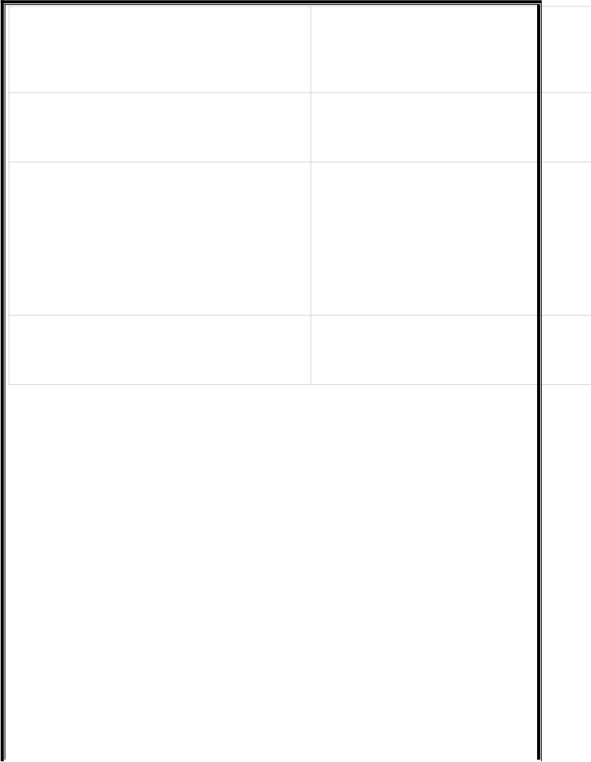

当一个灵能者深入到亚空间中来增强他的能力时，总是会有机会让至高天渗入到我们的现实中，而这一因素总是具有破坏性和损害性的。有时，亚空间的这种表现是只会反应在灵能者自己身上，但一般来说，它就和亚空间本身一样不可预测。许多可能的影响已经被发现，包括戏剧性的温度下降、幽灵般的声音、不安的感觉，或者当地的植物突然一齐死亡。而在非常罕见的情况下，可能会产生大规模的亚空间裂口，造成最严重的后果。当一个灵能者自由乃至更高的力量等级进行施法时，就他有产生灵能现象的风险。详见灵能聚焦和表6-3：灵能力量。
星语者是任何穿越虚空、远离有人居住的行星或空间站或任何其他太空通信中继站的船只的宝贵组成部分。星语者在星际间发送信息的能力，使得他在行商浪人的船上几乎是必须性的存在。然而，经常深入诸如科罗诺斯扩张区之类的未知地区的行商浪人通常会在船上携带一个以上的经过灵魂绑定仪式的灵能者，因为在与难以捉摸的异形或原始人类部落打交道时，有一位星语者在身边总会让形势变得更加有利。
而其中格外有价值的便是那些更强大和更有经验的星语者，他们经常带领一艘船或舰队的星语者组成唱诗班，从而使他们能够发送更为复杂的信息或接收更清晰的灵能信号。他们有时也被称为超然星语者，这些特殊的灵能者经常以他们独特的天赋为行商浪人提供协助。
|
效果 | |
|---|---|---|
|
黑暗预兆：一阵微弱的风吹过了灵能者与而他们每个人都能感到在银河系的某个地生了不幸的事情。 | 他身边的 方，刚刚 |
|
|
会引起回 |
|
渎圣恶臭：灵能者周围的空气中弥漫着一臭。 | 种奇怪的 |
|
|
他自己固 向他的思 |
|
|
盖了 3d10 |
|
玷污之气：所有在其 1d100 米范围内的动惊吓和刺激；具有灵能感知技能的角色可者的影响是其原因。 | 物都会受 以确定灵 |
|
|
都会忘记 |
|
腐烂：5d10 米的范围内的食物和饮料全部 | 腐败变质 |
|
微风萦绕：在灵能者周围刮起了几秒钟的飘的物体吹得乱七八糟。 | 风，把轻 |
|
镜面扭曲：半径 5d10 米内的镜子和其他或破碎。 | 反射面会扭 |
|
|
合内变得 |
|
|
者会获得
|
|
非自然腐朽：在灵能者周围3d10 米内的枯萎死亡。 | 所有植物都 |
|
鬼魅狂风：灵能者周围爆发出呼啸的狂风4d10 米内的任何人进行一次简单难度的 (力量检定以避免被击倒在地。 | , 要求他 +30）敏捷 |
|
下。如果这个区域内有任何人的图片或雕会流出血泪。 |
头和木头上 像，他们 |
|
|
米范围内 普通难度 |
|
灵能电场：灵能者 5D10 米内的空气中充使得周围所有毛发树立起来，并且使得无施短路。灵能者周身照耀着骇人的光芒。 | 斥着静电。保护电气 |
|
亚空间幽灵：鬼魂们充斥在灵能者3D10m处飞舞，痛苦嚎叫。在这个范围内的所有能者本人）必须进行抵抗恐惧（1）检定。 | 内，他们 人（除了 |
|
向上坠落：灵能者 2D10 米内的所有东西自己）都因为短暂的重力消失而上升 1D1 2 秒之后，所有东西都坠落回地面 | （包括灵能0 米。在 |
|
女妖嚎叫 ：一道刺耳的恸哭响彻整个区玻璃，并迫使每个能听到这声嚎叫的凡人者自己）进行一次挑战（+0）的坚韧检定陷入 1D10 轮的耳聋状态。 | 域，震碎所（包括灵 , 否则将 |
63-65
狂怒冲击：灵能者被看不见的恐怖所袭击在地上，并受到 1D5 点伤害（坚韧可以保伤害，但盔甲不行，除非受到了辟邪护佑必须进行一次检定以抵抗恐惧（2）。
。他被打
护自己免
) 。灵能
66-68
亚空间阴影：在转瞬之间，世界的面貌发所有在灵能者 1D100 米内的人，对亚空间个幸运而又短暂的一瞥。所有该范围内的能者）必须进行一次艰难难度的（-10）
则将获得 1D5 错乱点。
生了变化
阴影有了
人（包括意志检定，
|
机魂震怒：机魂拒绝被灵能者这种极度不使用。在灵能者 5D10 米内的所有未受护佑 | 自然的存 的技术设 |
| 在一瞬间故障，在此区域内的所有远程武第九章：进行游戏）。所有使用赛博植入进行一次普通难度的（+10）坚韧检定，否点伤害。 |
物的人必则将受到 |
|---|
72-74
亚空间疯狂：一道强烈的腐化的不谐波浪2D10 米范围内的所有生物（除了灵能者）态 1 轮。他们必须通过一个艰难难度的 (定，否则将获得 1D5 点腐化点。
使得灵能
陷入狂暴
-10）意志
|
|
开。在表6到相应的 |
|
||
|
效果 | |
01-05
胡言乱语 ：当不受控制的亚空间能量他
脑中汹涌之时，灵能者痛苦地尖叫着。他次挑战难度的（+0）意志检定，否则将获狂点，并且被眩晕 1D5 轮。
毫无保护的
必须进行
得 1D5+
|
亚空间灼烧：一股来自亚空间的强悍能量着灵能者的精神，让他感到天旋地转。他伤害并且眩晕 1D5 轮。 | 猛烈地冲 承受 1D5 |
|---|---|---|
|
|
者被击晕须进行一 眩晕 1 轮。 |
|
灵能爆炸：一股爆炸性的力量将灵能者抛的空中，然后坠落到地面上（见第261 页则） | 到 1D10 米 坠落伤害 |
|
|
身躯，灼烧 力量，并 |
25-30
思维闭锁：一股力量将灵能者的思维关在监狱之中。灵能者将陷入高度紧张并倒在的每一轮，他都必须花费一个完整动作进一旦成功，他的思维将会得到解放，并且体。
一个虚无
地上。此
行意志检
重新掌管
31-38
时光紊乱 ：时间在灵能者周围扭曲。他实世界中，并将在 1d10 轮后（或者是 1 分重新出现。灵能者将获得 1D5 错乱点和 1韧损伤。
瞬间消失在
钟叙事时
D5 点永久
39-46
灵能反射：灵能者的能力又反射回他的身射具有正常的效果，但释放目标是灵能者这次灵能是具有增益效果的 ，那么它
上。这次
自己。如
将反而造
|
。这次伤 |
|---|
47-55
亚空间低语：恶魔的话语充斥在灵能者周空间里，低语着令人胆寒的秘密和令人震该地区内的每一个人（包括灵能者自身）一次困难难度的（-20）意志检定，否则点腐化点。
围 4D10 米
惊的真相
都必须进
将获得 1
|
灵魂互换：灵能者的思维被剥离出他的身进另一个附近的生物或者人之中。灵能者范围内 50 米的随机人或者生物（注意， 是恶魔，不可接触者或者其他"无魂者"） 1D10 轮。受到此效果影响的可能是盟友，敌人。在此次交换中，每个人都保留了武道技能，智力，感知，意志和社交，但其性将与新的身体保持一致。如果任何一方那么该次效果将立刻结束。经历该效果的此经历一同获得 1D5 疯狂点。如果在范围的生物，那么灵能者必须进行一次意志检为他的思维在亚空间内徘徊，导致他在 1紧张之中。在经历本次效果之后，灵能者乱点。 |
体，并被和一个在该生物不可将交换意也有可能器技能，他的所有有人被杀两个人将内没有任定，否则 D5 轮内陷获得 2D10 |
|---|---|---|
|
黑暗召唤：一个亚空间掠食者（见第十四外星人）在灵能者的3d10 米范围内撕入续存在 1d10 回合或直到它被杀死。它憎将其攻击指向不知不觉中召唤了它的傻瓜 | 章：对手现实空间， 恨施法者， 。 |
68-72
撕破面纱：空气中回荡着恶魔肆意大笑的万化却又充满腐化之景的亚空间真容变得在灵能者 1D100 米内的所有有知觉生物 (必须进行一次检定以对抗恐惧（3）。此轮。
景象，千
清晰可见
包括灵能
效果持续
73-78
血雨：灵能风暴如狂风呼啸般爆发，一阵能者 5D10 米范围内的区域。任何在此区域过一个挑战难度的（+0）力量检定，否则地。并且，由于呼啸的狂风和天空中的血这个区域内释放灵能的人，将自动触发亚定。该风暴持续 1D5 轮。
血雨覆盖
的人必须
将被击倒
雨，任何
空间事故
79-82
灾变爆炸 ：灵能者的能力产生过载，在
能量中产生电弧。灵能者的 1D10 米范围括灵能者）受到 1D10+5 点能量伤害，同
的所有衣物和装备都会爆炸，使他赤裸冒上。在此效果之后，灵能者将在 1D5 小时任何能力。
巨大的亚空
内所有人
时这名灵能
烟的倒在
内不能使
有生大的成
能替到
次立D
物的思师能力的智力、社功，将持
者 3D10 米腐烂、燃2D10 点撕半伤害。
极难难度马被一名10 周后，此时他拥忆。他获动所带来访问。从道，他的
。他要么或者是被实体将会
83-86
群体附身：恶魔们蹂躏着 1d100 米内所该区域内的每个角色都必须像受到傀儡击一样进行抵抗（见第 166 页；攻击者和意志都等于60）。如果这种附身如果2d10 回合

87-90
。
记行庭管
灭又魔
91-99
现实震荡：现实试图压垮灵能者，在灵范围内的区域被粉碎。所有实体物品交和冻结，区域内的所有人和所有物品受伤害。受加护的对象和不可接触者遭受迷失亚空间：灵能者必须马上进行一（-30）意志检定。如果他失败了，他会魔出于未知的目的拖入亚空间之中。在 1灵能者将出现在一个有人居住的世界上着他着魔时曾经历的模糊而又恐怖的 4D10 腐化点，并承担他被附体时做出的何其他可能后果，包括一次潜在的审判在起，由于他的身体成为了亵渎力量的有亚空间事故结果检定+10。
00
湮灭：灵能者会立即且无法改变地被消吸入亚空间之中，没有人再看到过他，狱之火所吞噬。在 50%的几率下，一只恶现在灵能者的位置。